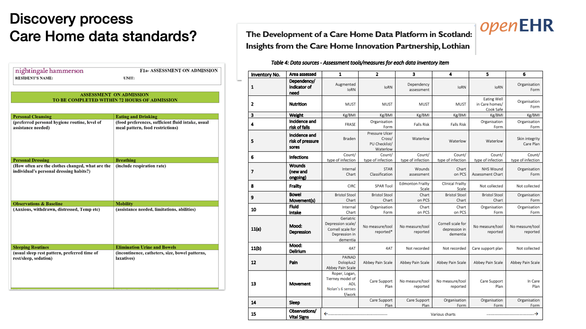

openEHR workshop Session 2
Agenda
| Topic | Dtn. | Start | End |
|---|---|---|---|
| Archetypes in more detail | 45 | 10:05 | 10:50 |
| Break | 10 | 10:50 | 11:00 |
| Build an openEHR app demo | 45 | 11:00 | 11:45 |
| Break | 5 | 11:45 | 11:50 |
| Practical modelling | 45 | 11:50 | 12:35 |
| Break | 5 | 12:35 | 12:40 |
| Tech intro/ wash-up | 20 | 12:40 | 13:00 |
Practical session - Getting started
-
Open a web browser – Chrome or Firefox are best
-
Go to https://tools.openehr.org/designer (Best if you open this link in a new tab).
-
Login:
freshehr_trainingPassword:ad4freshtraining -
Choose the repository allocated to you – Aberdeen, Dundee, Perth, Helsinki, Inverness
-
Find ‘Nursing Admission Assessment STARTER.v0' in the list of templates. This will open the template.
-
Open the original 'Nursing Admission Assessment paper form' (Best if you open this link in a new tab).
A. Tidy the basic template
Problem/Diagnosis
-
Rename the Problem/Diagnosis archetype to 'Main Diagnosis'
-
Constrain out everything apart from 'Problem/Diagnosis name'
Adverse Reaction Risk
-
Pull in the 'Adverse Reaction Risk' archetype
-
Set it's occurrences to 0..* to allow multiple allergies to be recorded.
-
Constrain out everything apart from 'Substance' and 'Manifestation'
-
Rename ‘Manifestation’ to ‘Reaction Details’ and make it mandatory
Medication Order
-
Clone 'Specific direction description'
-
Rename one to 'Dose' and the other to 'Frequency'
Vital Signs section
-
Pull in Pulse Oximetry into Vital Signs section
-
Constrain out everything apart from 'SpO2' ratio
-
Make 'systolic' and 'diastolic' Blood pressure mandatory
Add a Clinical Frailty scale
Go to the International CKM
https://ckm.openehr.org/ckm/archetypes/1013.1.4691/export
(Best if you open this link in a new tab).
-
Press the ‘Export ADL’ button and save the archetype somewhere on your system
-
Go back into Archetype Designer and go to top-menu->‘Import’ then either Browse to your file or drag and drop then Upload.
-
Go back to your template, click on ‘content’, then pull in the Clinical Frailty scale from the list of archetypes on the right.
B. Create a new local archetype - Additional information on admission
The nurses have used the templates you created but have asked for some changes.
You can view the original document here
'Additional Information on Admission' (Best if you open this link in a new tab).
- Create a new ADMIN_ENTRY archetype called ‘Inpatient admission details’ then add these ‘element’ datapoints ...
Mode of access
Ambulatory
Wheelchair
Stretcher
Other _________________________________
Transported with Oxygen
Monitor
IV
Other _________________________________
Admission method Waiting list
Booked
Planned
A&E department
General Practitioner
Bed Bureau
Consultant Clinic
Other ____________________________
Additional Help needed
Yes No
Once you have created your new archetype, go back to your template. Highlight ‘content’ and add your new archetype then Save it.
Further reading
General Information:
openEHR website: https://www.openehr.org/
openEHR videos and presentations: https://www.youtube.com/c/openehr/featured
openEHR Discourse (discussion forum): https://discourse.openehr.org/
What is an open platform? - https://inidus.com/what-is-an-open-platform/
What is openEHR? - Introduction: https://www.openehr.org/about/what_is_openehr
openEHR Zotero library: https://www.zotero.org/libraries
Clinical Knowledge Managers (CKMs) - archetype repositories and governance tools:
International CKM: https://ckm.openehr.org/ckm/
Apperta CKM (UK): https://ckm.apperta.org/ckm/
Social Care Examples:
Social Care Project on Apperta CKM: https://ckm.apperta.org/ckm/projects/1051.61.50 A repository for the social care related archetypes and templates that we have been working on for various use cases Care Home Dataset template: https://ckm.apperta.org/ckm/templates/1051.57.273
Based on the care home data inventory described in a recent paper by Lucy Johnston et al from Edinburgh Napier University, which is available here: https://www.medrxiv.org/content/10.1101/2020.08.17.20176503v2
The original data inventory is shown below, along with another care home dataset that we have used as an example in our data models. 